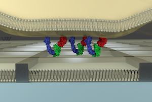

Nanomaterials can be tailored to match the dimensions of signaling assemblies on the cell surface. I used top-down and bottom-up approaches to fabricate micro/nanostructures (40 nm-10 µm), and combine them with a supported lipid bilayer (SLB) to reveal spatiotemporal behavior of signaling assemblies on the T cell membrane.
Diffusion barrier by metal grids
Normally, individual molecules on a SLB can diffuse freely in two dimensions. You can, however, confine the diffusion of molecules in a limited area by drawing metal grids (line width: 80 nm, height: 5 nm, side of each grid: 500 nm-several hundreds of µm) by photo- and ebeam- lithographies. This setup will inhibit lateral transport of receptor/ligand complexes formed at the interface between a live cell and the SLB. This is useful for studying the effect of cluster formation and transport behavior of receptors on the downstream signaling of the cell.
Gold nanoparticles

Self-assembly of micelles on the glass substrate gives a regular array of gold nanoparticles with controlled interparticle distances (40 nm-180 nm). While the diffusion barrier by metal grids confines all the lipids and proteins into the limited area, these nanoparticles do not confine them. When the clusters of proteins are big enough compared to the interparticle distance of nanoparticles, the transport of the clusters is blocked. Using this technology, you can observe and manipulate the dynamic behavior of signaling clusters (Caculitan, Kai, Liu, et al. Nano Lett. 2014).